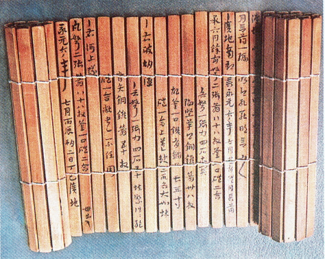

これが今回の作品です。
結果としては扇子っぽくなくなってしまいました。
結果としては扇子っぽくなくなってしまいました。

妹が留学に行くときお土産として扇子を持って行ったことがきっかけに、
日本の伝統を感じられ、無意識に日本人らしさを感じさせてくれるもの。
日本の伝統を感じられ、無意識に日本人らしさを感じさせてくれるもの。

まとめ
- 本来紙でできている部分を木で作るところに難しさを感じ、
- モノには適切な素材があると感じました。
- 上を糸で止めてしまったせいで閉じられなくなってしまった。。
- これは扇子というより木簡みたいだともいました。
~参考に~
木簡

改良点
- 一枚一枚を大きくする。
- 角度をもっと大きくする。
- 焦げ目をつけたり文様を入れる。
- この三点を意識することでより良い作品にすることができると思う。